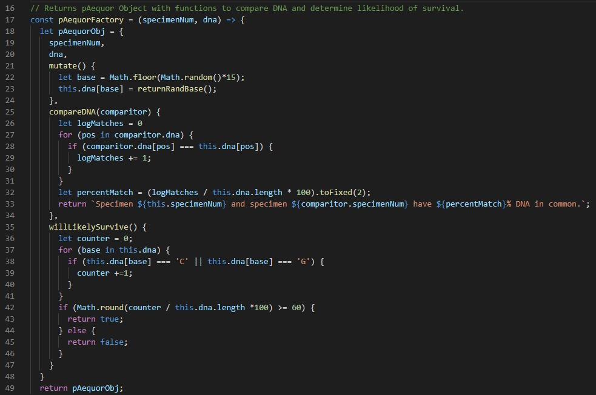

About Me
Hi, I'm James! I'm currently educating myself to become a Software Developer.
Earlier this year I decided to make a career change.
Having spent the last decade managing supermarkets, I decided to pivot and start training to get into the industy working at the cutting edge.
I bring with me
a wealth of management experience and enthusiasm when it comes to learning new technical skills. Thanks to Codecademy, my knowledge is growing FAST!
I'm looking forward to getting stuck in to my first real project and if you think I could be useful to you, please visit my contact page and get in touch.
Projects
"Hello, World!"
My very first line of code (if you exclude teenage James's attempt at a MySpace page!) was the classic "Hello, World!" print
to console. I took a Python course in my spare time during 2020, and it was this that cemented my desire to become a
Software Engineer.
Python | Noughts & Crosses
The first interactive 'thing' I made was a simple noughts and crosses game you can play against the computer. I made it using Python 3 as part of
course with edube.net. You can have a look at the code below. Press play to have a go!
First Website - Sports Club
Click Here to see my first website created from scratch. It's not interactive, or particularly interesting...
but it's all mine!
First Javascript Project
My first JavaScript objects...
